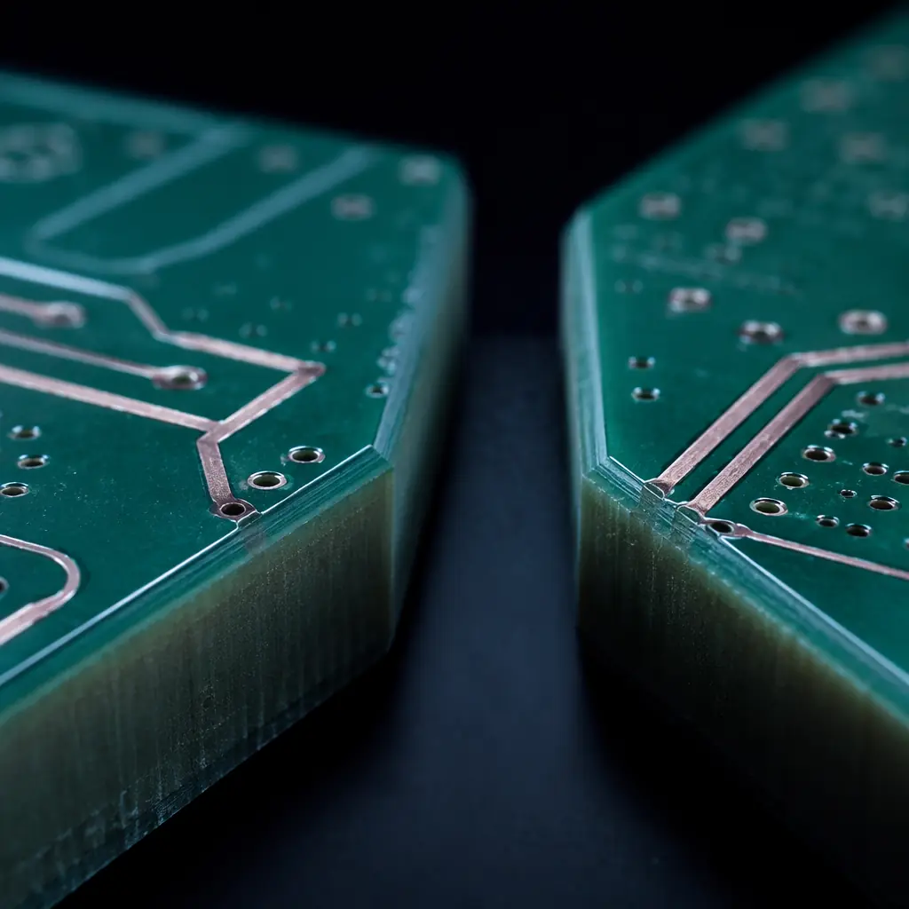
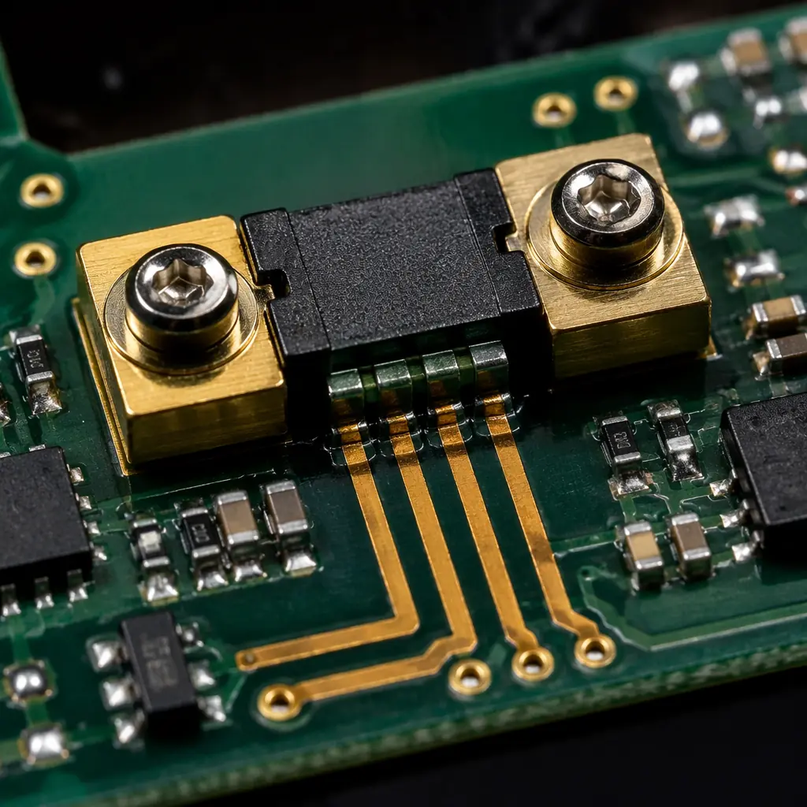
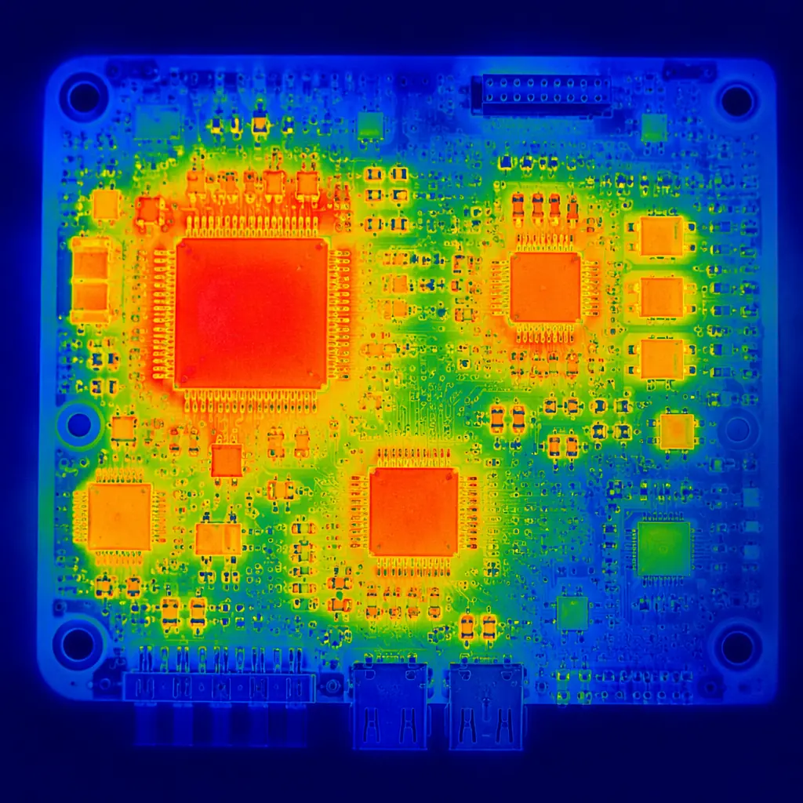

Every electric vehicle on the road — from Tesla Model Y to BYD Seal — relies on a Battery Management System PCB that monitors cell voltages, balances charge, and isolates the high-voltage traction battery from the low-voltage control electronics. Get the PCB design wrong, and you're looking at thermal runaway, isolation breakdown, or a vehicle that won't pass UN R100 homologation. This guide covers the PCB-level design requirements that separate a production-ready BMS from a lab prototype.
At Huaxing PCBA, we manufacture BMS boards for EV and energy storage customers across 30+ countries, with IATF 16949-certified production lines handling everything from 4-layer slave boards to 12-layer master controllers. Here's what you need to specify before sending your BMS design to fabrication.

High-Voltage Isolation: The Foundation of BMS PCB Design
The defining challenge of any BMS PCB is the voltage gap between the high-voltage (HV) traction domain — now routinely 400V to 800V in modern EVs — and the low-voltage (LV) 12V/48V control domain. A single design mistake here can cause arcing across the PCB surface, destroying not just the BMS but potentially the entire battery pack.
Creepage and Clearance Requirements
IEC 60664-1 and IPC-2221 define the minimum spacing between HV and LV traces. For an 800V system with Pollution Degree 2 and CTI ≥ 175 (standard FR-4), you need:
Creepage Distance: ≥ 8.0 mm (uncoated), ≥ 4.0 mm (conformal coated)
Creepage is the path along the surface of the PCB between HV and LV conductors. Adding conformal coating doubles your effective creepage rating. For 800V systems, selecting the right conformal coating is not optional — it's what lets you shrink board area without sacrificing safety margins.
Clearance Distance: ≥ 5.0 mm (through-air)
Clearance is the shortest distance through air between two conductors. At 800V, arcing through air becomes a real risk. Mill or route isolation slots (≥ 1.0 mm wide) into the PCB substrate between HV and LV zones — don't rely on solder mask alone.
Reinforced Insulation: double the basic values
If your BMS lacks a physical isolation barrier (transformer or optocoupler) at a specific node, IEC 60664 requires reinforced insulation — doubling both creepage and clearance. This often forces a board size increase or a layer-count escalation. Refer to our high-voltage PCB design guide for full clearance tables.
Factory Reality: For an 800V BMS master board on standard FR-4 (CTI 175), we typically specify 12 mm creepage between HV and LV domains with routed slots, plus a 2-layer stack of conformal coating (acrylic base + silicone top). This passes 3,500V hipot testing with margin.
Current Sensing Architecture: Shunt vs Hall-Effect
BMS current measurement must handle ranges from milliamps (sleep mode) to 500A+ (rapid acceleration), with accuracy requirements of ±0.5% across temperature. The choice between shunt-resistor and Hall-effect sensing determines your entire PCB layout strategy.

| Parameter | Shunt Resistor | Hall-Effect Sensor | Fluxgate (High-End) |
|---|---|---|---|
| Accuracy @ 25°C | ±0.1–0.5% | ±0.5–1.5% | ±0.05–0.1% |
| Temp Drift | 50–100 ppm/°C | 100–300 ppm/°C | 10–30 ppm/°C |
| Isolation | Requires isolated ADC | Built-in (magnetic) | Built-in |
| PCB Footprint | Large (Kelvin sense pads) | Compact | Largest |
| Cost per Channel | $0.50–3.00 | $2.00–8.00 | $15–40 |
| Best For | Slave modules, sub-200A | Master BMS, 300A+ | Lab-grade, 0.01% req. |
The shunt approach is dominant in volume production because of cost. A 100 µΩ shunt with a 16-bit isolated sigma-delta ADC (like the TI AMC3306) gives you ±0.2% accuracy across -40°C to +125°C. The PCB design challenge is Kelvin sensing: you must route four separate traces from the shunt pads to the ADC input, with matched impedance and guard traces to reject common-mode noise from the 800V bus. Our PCB signal integrity guide covers the routing rules in detail.
Cell Monitoring: Voltage Sensing Across 100+ Cells
A typical EV battery pack contains 96–200 series-connected cells. The BMS must measure each cell's voltage to ±1 mV accuracy while the entire stack floats at 400V or 800V above chassis ground. This is where the PCB architecture gets complex.
Stacked AFE Architecture with Isolated SPI
Modern BMS designs use stacked Analog Front-End ICs (e.g., ADI LTC6811, TI BQ79616) that each monitor 12–16 cells. The AFEs communicate via a daisy-chained isolated SPI bus using capacitive or transformer isolation between each IC. The PCB must maintain ≥ 2.5 mm creepage between adjacent AFE ground domains (since each "sees" a different 60V potential).
Differential Input Filtering at Every Cell Tap
Each cell voltage sense line needs an RC low-pass filter (typically 100 Ω + 10 nF, fc ≈ 160 kHz) placed within 10 mm of the AFE input pin. This rejects the 10–100 kHz switching noise from the traction inverter that couples onto the cell interconnect busbars. PCB layout must keep these filter loops tight — any antenna-like trace between the filter and the AFE pin invites EMI failures. See our EMC/EMI compliance guide for the full grounding strategy.
Cell Balancing: Passive vs Active on the PCB
Passive balancing (bleed resistors) dissipates excess charge as heat — typically 100–300 mA per cell through a MOSFET and power resistor. This means your PCB must sink 2–5W of heat per AFE IC. Active balancing (using a switched-capacitor or inductor-based charge shuttle between cells) is more efficient but requires dedicated DC-DC converter islands on the PCB, adding ~$2/BOM cost and significant layout complexity.
Procurement Tip: When sourcing BMS PCBs, specify whether the manufacturer can handle > 8 layers with controlled impedance on inner layers. BMS master boards routinely use 10–12 layer stackups to separate HV switching nodes, sensitive analog, and digital communication on dedicated layers. At Huaxing PCBA, our PCB stackup design capabilities support up to 32 layers with blind and buried vias.
Functional Safety: ISO 26262 ASIL Requirements on the PCB
A BMS that fails silently is more dangerous than one that fails loudly. ISO 26262 assigns Automotive Safety Integrity Levels (ASIL) based on hazard severity — most BMS functions fall under ASIL C or D, the highest risk categories. The PCB must implement diagnostic coverage at the hardware level.
Redundant Voltage Reference and Watchdog Circuits
ASIL D requires hardware redundancy. The BMS PCB must include a secondary voltage reference (independent from the main ADC reference) and an external watchdog IC that can force the contactors open if the main MCU hangs. These components must be on isolated power domains — a single-point failure in the LDO powering both the MCU and the watchdog violates the redundancy requirement.
PCB-Level Diagnostic Coverage: Open/Short Detection on Every Cell Sense Line
The AFE must detect open-wire faults on cell sense lines during every measurement cycle. This requires a weak current source (typically 100 µA) on every input pin, implemented either in the AFE silicon or as discrete PCB components. Our DFT guide for PCB testability explains how to verify diagnostic coverage at ICT and functional test stages.
Interlock Loop: A Simple Trace That Prevents Catastrophe
An interlock loop is a low-voltage signal routed through every HV connector on the BMS in series. If any connector is unplugged while HV is present, the loop breaks, the signal goes low, and the HV contactors open within milliseconds. This trace must be routed on the LV side of the isolation boundary with ESD protection diodes at every connector entry point.
Thermal Management on the BMS PCB
The combination of bleed resistors (2–5W per AFE), shunt resistor self-heating (up to 3W at 500A), and the main MCU (1–2W) means a BMS master board can dissipate 10–15W total. Without deliberate thermal design, local hot spots exceed the 105°C Tg of standard FR-4.
Copper Pour for Heat Spreading
Every power resistor and shunt needs a dedicated copper pour zone on at least 2 inner layers, connected by thermal vias (0.3 mm drill, 1.0 mm pitch, plugged with epoxy). Without thermal vias, a 3W shunt resistor on a 1.6 mm FR-4 board reaches 130°C junction temperature. With 20 plugged thermal vias under the pad, the same resistor stabilizes at 95°C. For heavy-copper designs, see our heavy copper PCB guide.
Temperature Sensing Placement
NTC thermistors must be placed at the physical center of each AFE IC group (not at the board edge) and at the shunt resistor body. The PCB trace from thermistor to ADC must be Kelvin-routed to cancel lead resistance — a 0.1 Ω trace resistance on a 10 kΩ NTC adds 0.001% measurement error at 25°C but that error balloons to 0.5% at -40°C where the thermistor is 100 kΩ.

BMS PCB Manufacturing: Layer Count, Testing, and Volume
Designing the BMS PCB is half the equation — manufacturing it at volume with zero-defect quality is the other half. Here are the production realities.
Layer Count: 4-Layer Slave, 10–12 Layer Master
Slave BMS modules (monitoring 12 cells, no MCU) work on 4-layer boards with standard FR-4. Master BMS controllers (MCU, CAN/LIN transceivers, HV isolation, contactor drivers) need 10–12 layers with high-Tg FR-4 (Tg 170°C) or polyimide for the HV-isolated inner layers. The cost difference is significant: a 12-layer master board costs 3–4x more than a 4-layer slave at 5,000-unit volumes.
Testing: 100% Flying Probe + ICT + Hipot
Every BMS board must pass three test stages. Flying probe verifies net connectivity on all layers (including the interlock loop and cell sense traces). ICT checks component values — a misplaced 100 Ω instead of 1 kΩ on a cell filter changes the measurement time constant by 10x. Hipot tests at 2 × (operating voltage) + 1,000V verify isolation barrier integrity. Our PCB testing methods comparison helps you specify the right test program for your BMS volume.
Traceability: Unique Board Serialization
IATF 16949 and ISO 26262 require full traceability from bare PCB laminate lot to finished assembly. Each BMS board receives a laser-etched 2D Data Matrix code during fabrication, linked to the laminate batch, solder paste lot, and reflow profile in the manufacturing execution system. This is not optional for ASIL C/D — it's auditable. Learn more in our PCB certifications guide.
At Huaxing PCBA, we manufacture BMS PCBs for EV and energy storage customers with full IATF 16949 traceability on 8 SMT lines. Our high-voltage PCB process includes automated hipot testing to 5,000V, 100% AOI on all solder joints, and conformal coating with thickness verification per IPC-CC-830. Whether you're prototyping a 4-layer slave module or ramping a 12-layer master controller to 50,000 units per year, our PCB supplier audit checklist gives you the framework to evaluate any BMS PCB manufacturer against the same standards we hold ourselves to.